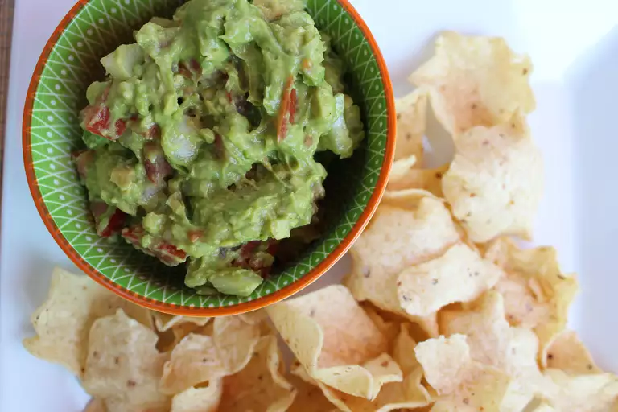

Guacamole

Description:
This recipe will provide instructions on how to make the world's best guacamole!
Take it from me! The Guacamole King!
Ingredients:
- Avocados: 2
- White Onions and tomatos: 1 each, Chopped
- Seasonings: Fresh garlic, salt, and pepper
- Lime Juice: Fresh
Instructions:
- Mash avocados
- Mix in other ingredients
- Chill and serve